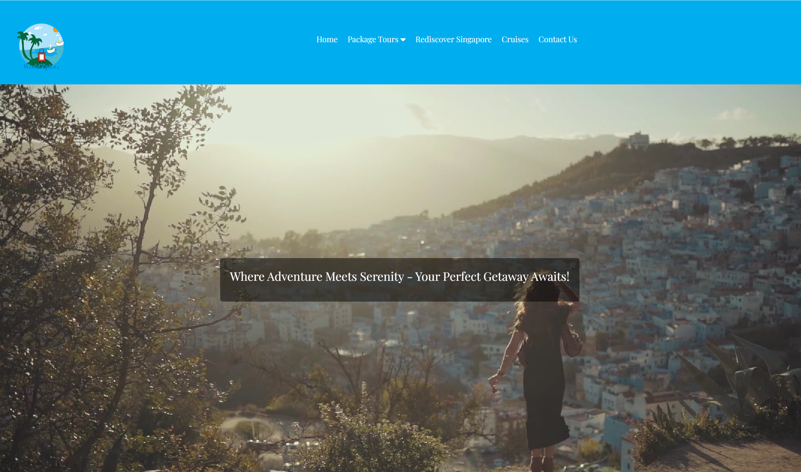
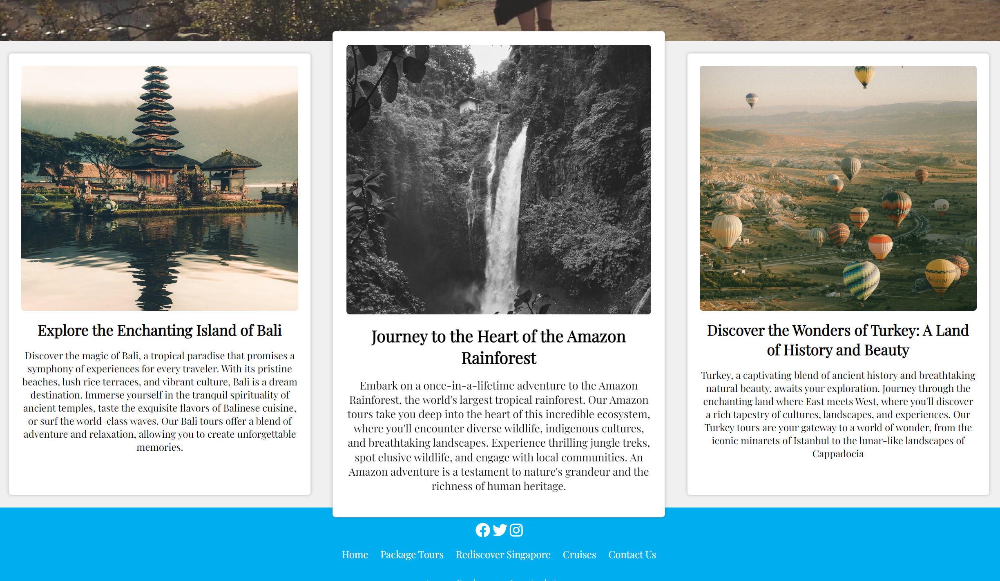
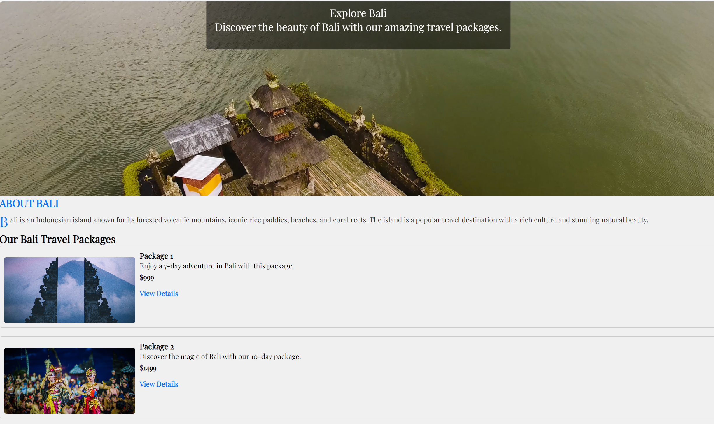
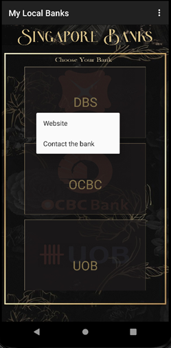
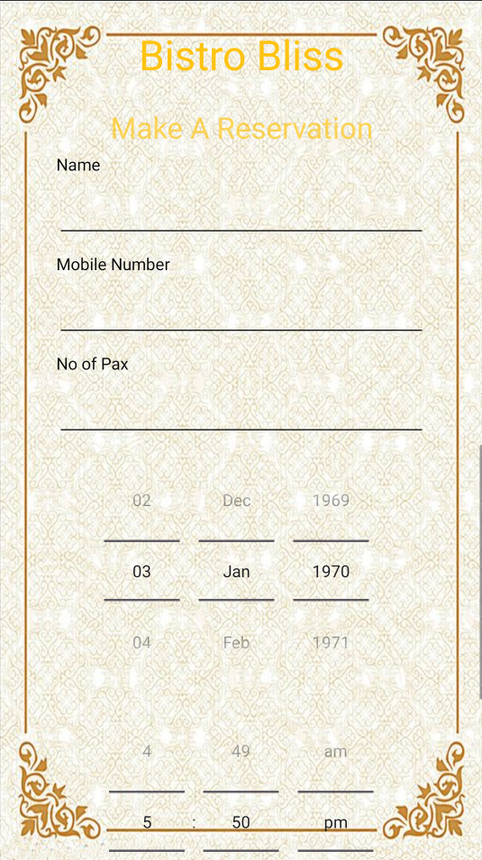
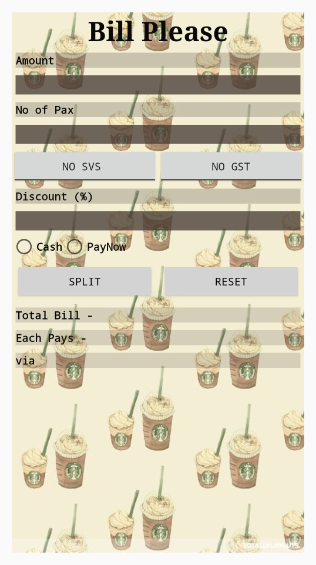
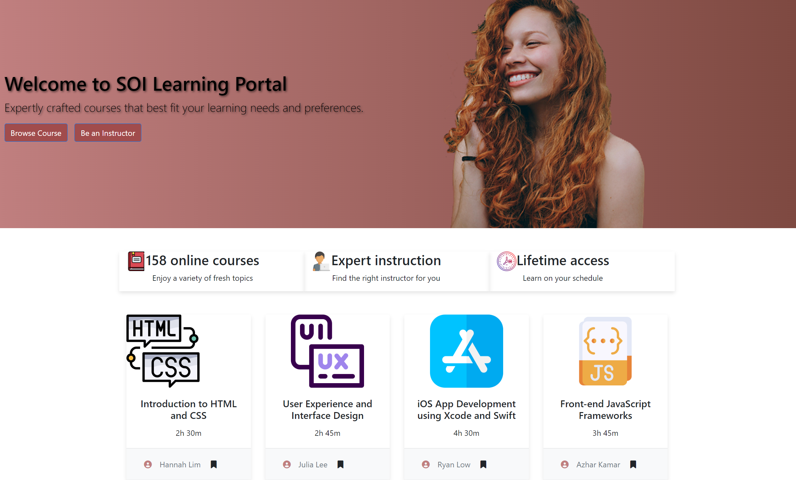
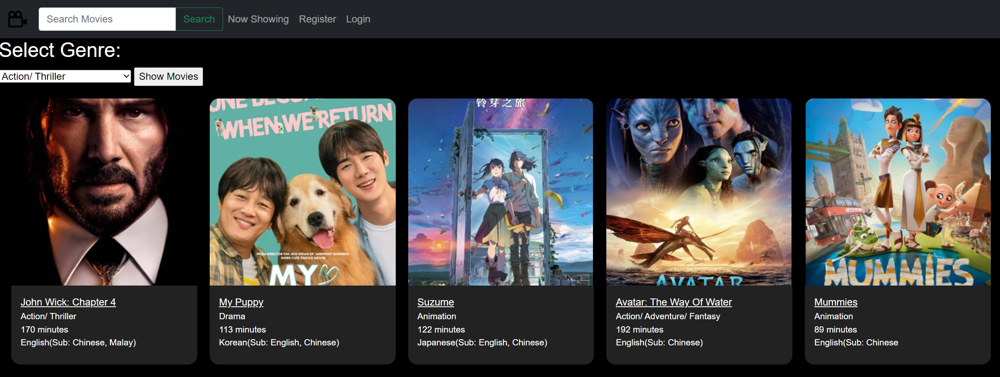

Programming Projects
01
Web Development
Using HTML and CSS, I designed and developed a website for a touring group. By combining these fundamental web technologies, I crafted a visually appealing and functional site that effectively showcased the group's information, tour schedules, and engaging content. The HTML provided the structure and semantic markup, while CSS ensured a polished and responsive layout across various devices. This project allowed me to apply my skills in front-end web development to create an intuitive and user-friendly online platform for the touring group's audience.
Web App







